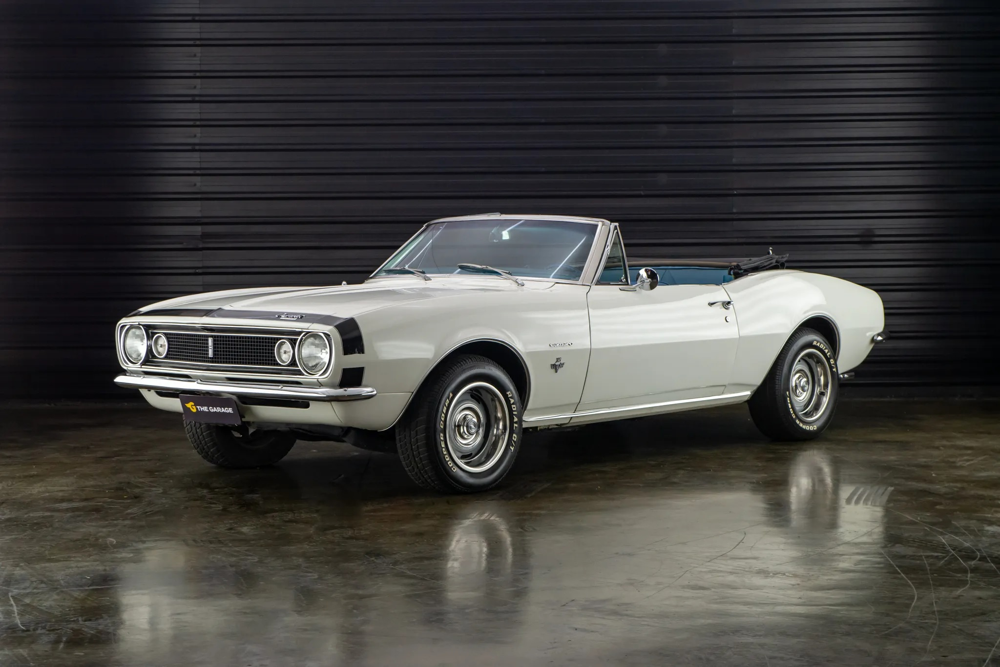
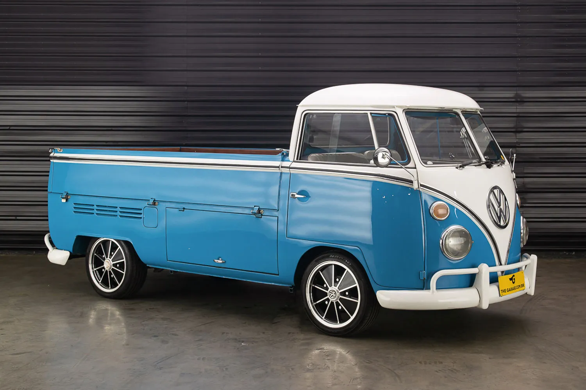

1967 Chevrolet Camaro Conversível
A primeira geração do Chevrolet Camaro é um muscle car americano introduzido pela Chevrolet no outono de 1966 para o ano modelo de 1967. Ele montou em uma plataforma GM F-body com tração traseira totalmente nova e estava disponível como 2 portas, 2 + 2 lugares, capota rígida e conversível.
Ler mais

1981 Mercedes-Benz 300GD
O Mercedes-Benz Classe G é um automóvel com tração nas quatro rodas fabricado pela Magna Steyr (anteriormente Steyr-Daimler-Puch) na Áustria e vendido pela Mercedes -Benz. Originalmente desenvolvido como um off-roader militar, posteriormente modelos mais luxuosos foram adicionados à linha.
Ler mais

2016 Bendita Macchina 250cc
Bendita Macchina é um dos mais famosos estúdios de customização do Brasil. Ao comando do talentoso Ro Marcondes, sócio proprietário e responsável pelo design do estúdio, junto com a sua equipe, levaram em consideração as motos Trails dos anos 70. Com uma combinação de cores muito agradável.
Ler mais

1995 Yamaha VMax
O V-Max foi projetado por Atsushi Ichijo em uma equipe liderada por Akira Araki com contribuições de Ed Burke e John Reed. Após o seu lançamento em 1985, o V-Max foi aclamado pela crítica e ganhou o título de “Bicicleta do Ano” do Cycle Guide. Vendido no Japão e no exterior, o V-Max foi vendido apenas com pequenas modificações do ano modelo de 1985 até o ano modelo de 2007.
Ler mais

1975 Volkswagen Kombi Pick Up
Essa linda Volkswagen Kombi Pick-up nas cores azul e branca versão pick-up carinhosamente chamada de cabrita, faz parte do último ano da corujinha, valorizada versão com vincos dianteiros bem pronunciados que criavam um marcante V na frente ligeiramente arredondada e vidros do para-brisa separados. Recém restaurada.
Ler mais

2018 YAMAHA YBR150 FACTOR ED Bendita macchina
Bendita Macchina é um dos mais famosos estúdios de customização do Brasil. Toda a parte estética foi repaginada, dando uma característica única na moto. Por falar nisso, como princípio básico da Bendita, eles não repetem a moto. Cada uma delas é exclusiva e ganham um apelido para deixar isso bem claro.
Ler mais

1967 Mercury Cougar
Mercury Cougar é uma placa de identificação aplicada a uma série diversificada de automóveis vendidos pela divisão Mercury da Ford de 1967 a 1997 e de 1999 a 2002. Embora a placa de identificação seja mais comumente associada a cupês de duas portas, em vários momentos durante sua produção, o Cougar também foi comercializado como conversível, sedã de quatro portas , perua e hatchback.
Ler mais

1965 Ford F100 a venda the garage
Em outubro de 1957, a Ford começava a produzir em sua fábrica no bairro do Ipiranga, São Paulo, a picape F-100. O modelo seguiu o caminhão leve F-600, cuja fabricação começou um ano antes.
Ler mais

1997 Land Rover Defender 90 SOFT-TOP 4×4
O primeiro Land Rover foi apresentado em 1948 concebido com uma simplicidade para proporcionar capacidades extraordinárias com uma robustez e durabilidade inigualáveis. Efetivamente, seis décadas depois estima-se que mais de dois terços de todos os Land Rover produzidos ainda se encontrem em circulação, muitos destes nas condições mais extremas e nos locais mais inóspitos do planeta.
Ler mais